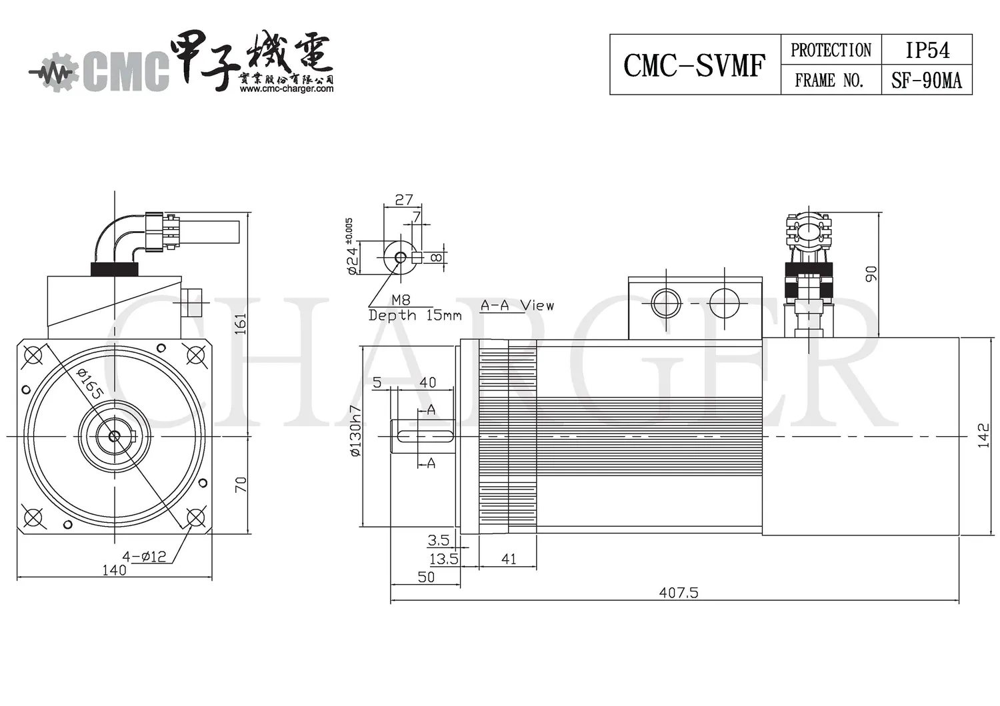

SVMF Series IP54 SF-90MA AC Servo Vector Motor
SVMF IP54 AC servo vector motor, frame SF-90MA, rated output 0.75–1.1 kW.

- Product code
- SVMF-IP54_SF-90MA
- Category
- AC Servo Motor
- Brand
- Charger Mechatronic (CMC)
- Series
- SVMF IP54
- Frame size
- SF-90MA
- Rated output
- 0.75–1.1 kW
- Rated torque
- 7–7.2 N·m
- Max. speed
- 8000 RPM
Specifications
| Product Series | Rated Speed(RPM) | Rated Output(kW) | Rated Voltage(V) | Rated Current(A) | Rated Torque(N-m) | Rated Torque(Kg-m) | Rotor Inertia(Kg-m²) | Max. Speed(RPM) | Frame Size |
|---|---|---|---|---|---|---|---|---|---|
| SVMF IP54 | 1000 | 0.75 | 360 | 2 | 7.2 | 0.74 | 0.003 | 8000 | SF-90MA |
| SVMF IP54 | 1500 | 1.1 | 380 | 2.7 | 7 | 0.72 | 0.003 | 8000 | SF-90MA |
Specification tables are reproduced from Charger Mechatronic documentation.
Dimension drawing


Select the drawing to open it at full size. Units: mm.
Frequently asked questions
How do I get a price for a model?
Open the model page and choose "Ask for a price", or send the product code and quantity by Zalo. CMV replies with a quotation within business hours. Prices are not listed on the website.
Can CMV help choose a motor and drive?
Yes. Send the line speed, material, thickness, width and the motor and drive in use; a CMV engineer will propose a configuration.
What about lead time and warranty?
Lead time and warranty terms are stated in the quotation.
Ask for a price or help choosing a model
Business hours: Monday to Friday, Vietnam time. Vietnamese, Chinese and English spoken.